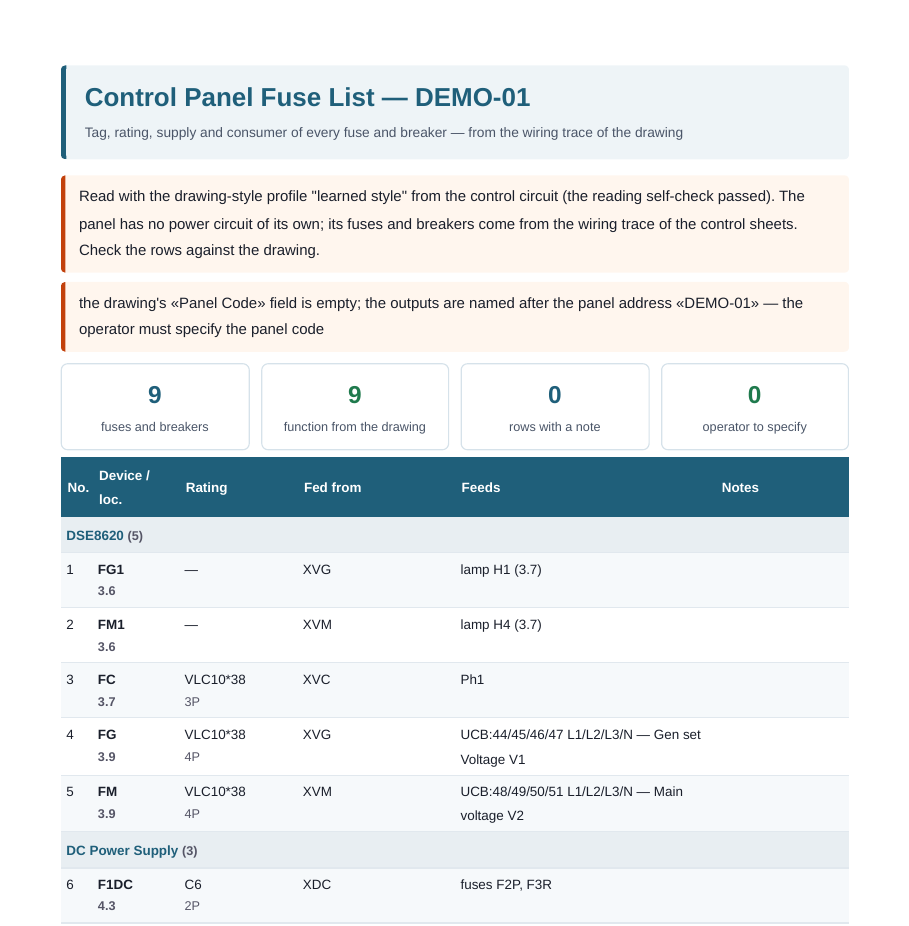
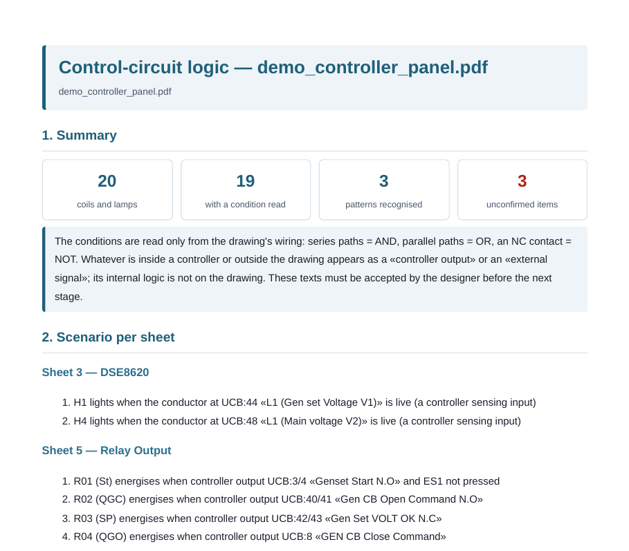
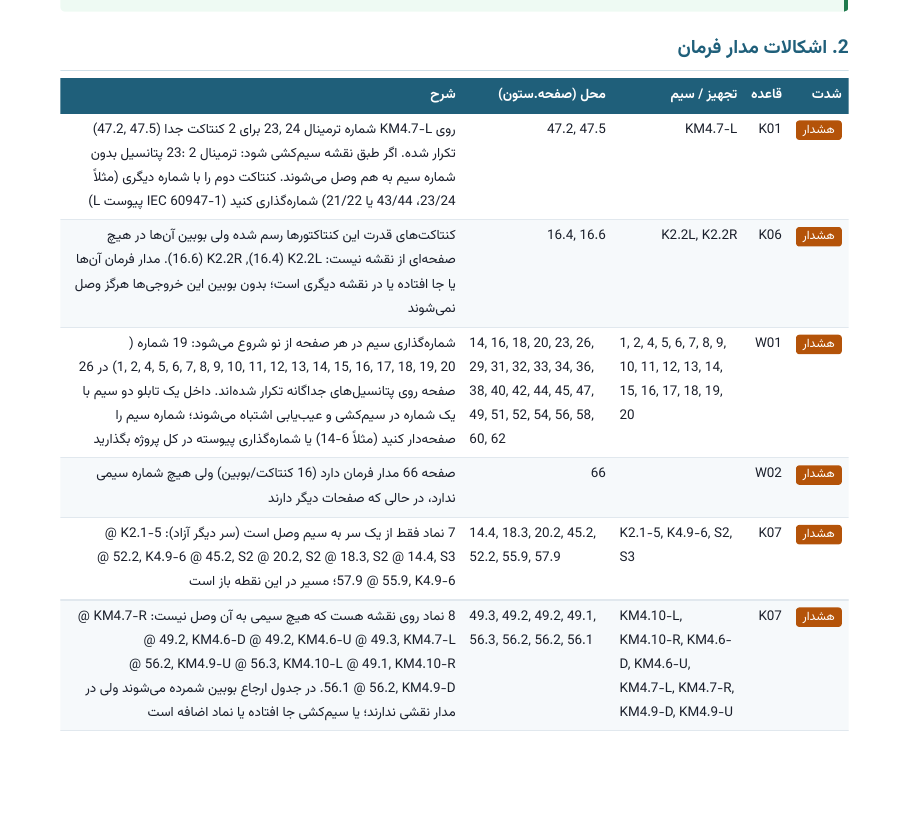
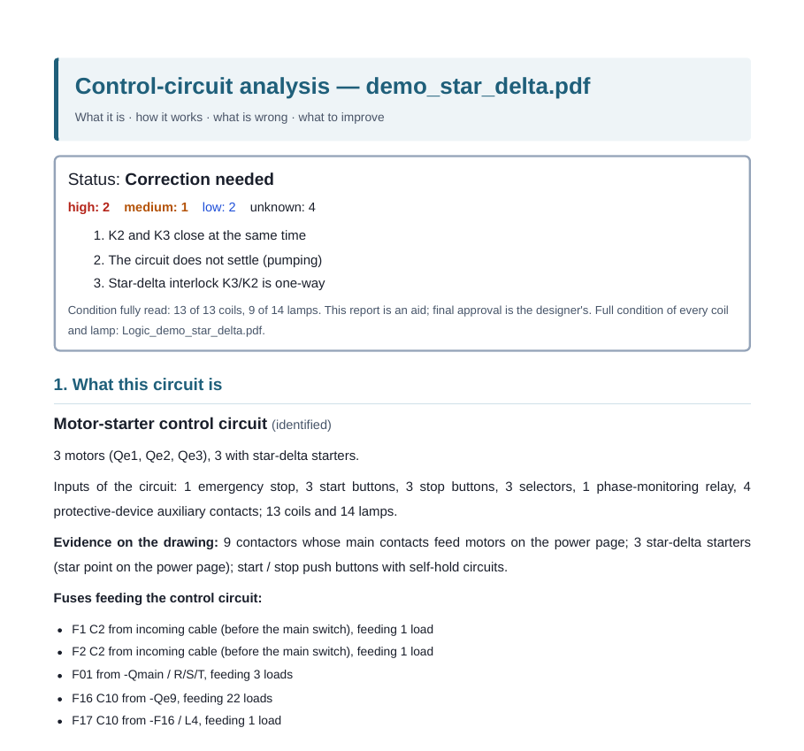
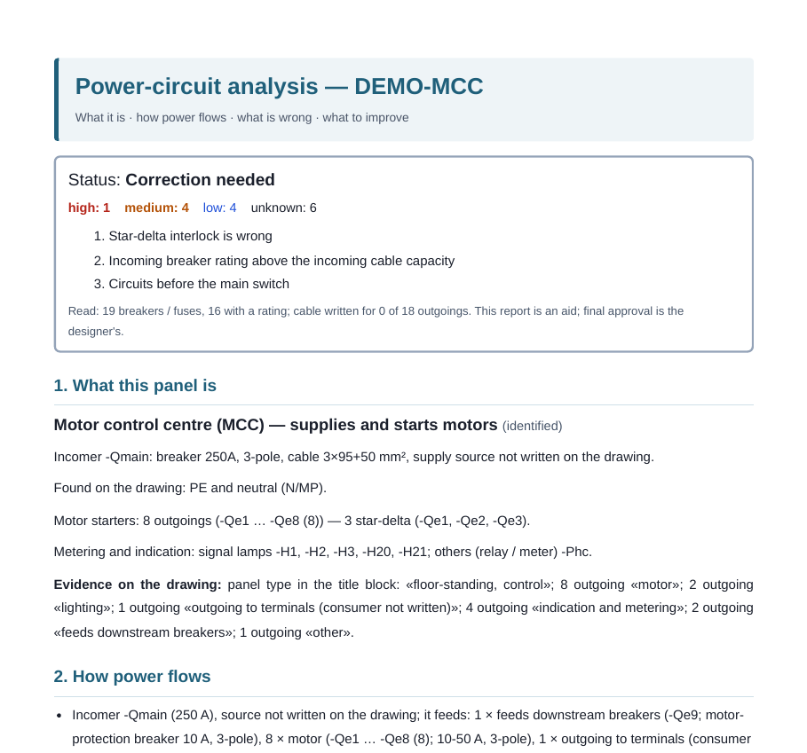
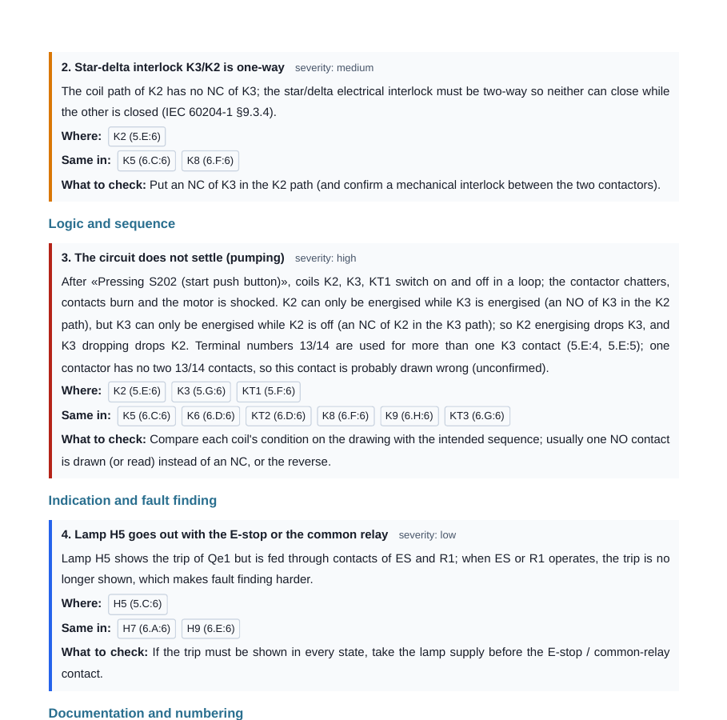
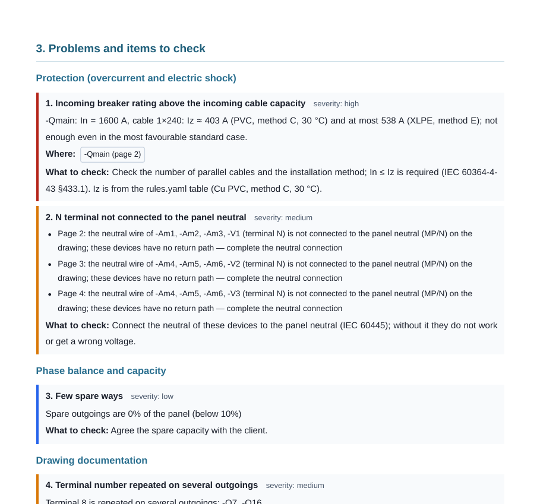
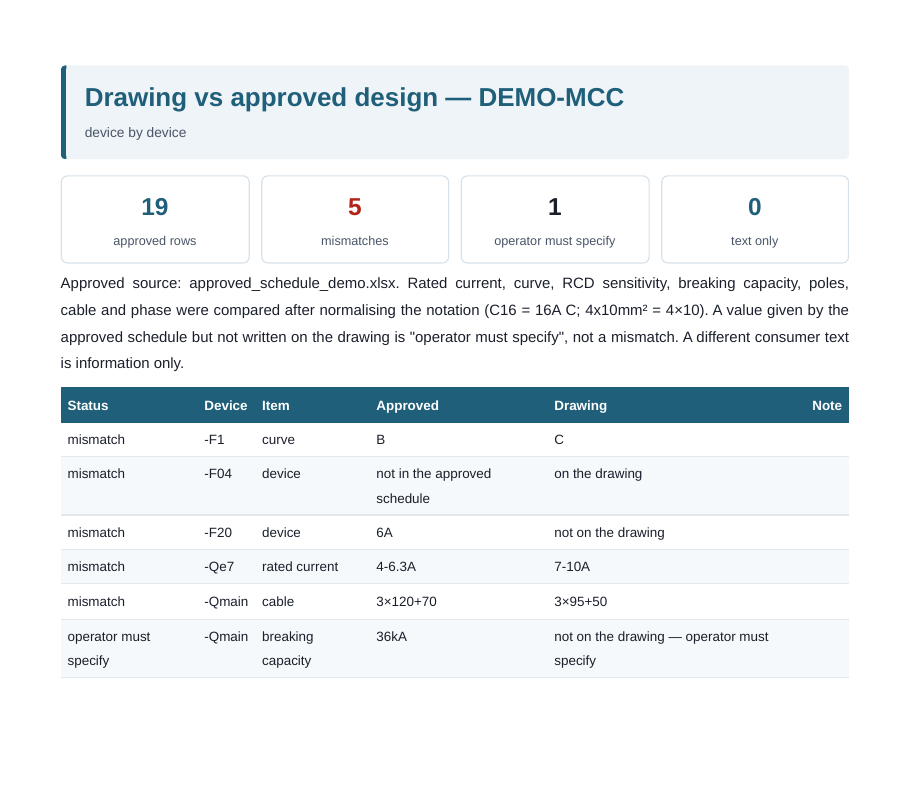
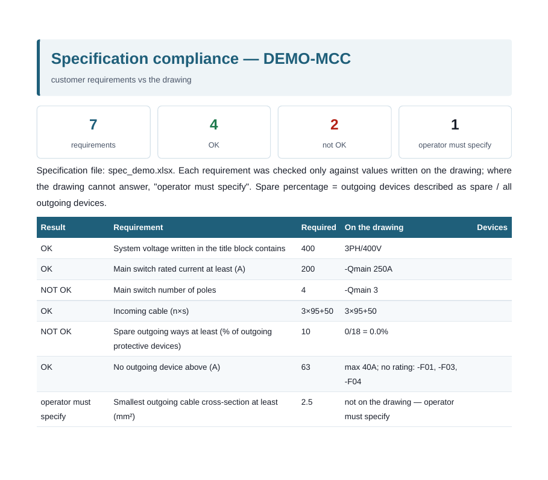

What it produces
| Output | Content |
|---|---|
| Fuse list (PDF + Excel) | breaker / fuse, rating, consumer, supply path, phase |
| Drawing review | 40 rules — IEC 60364, IEC 60898 / 60947, IEC 61082 |
| Control-circuit review | coils, contacts, interlocks, open wires, cross-reference errors |
| Control-circuit logic | condition of every coil and lamp from the wiring, patterns with evidence, scenario per sheet |
| Power calculations | IEC 60909 short circuit, IEC 60364-4-41 fault loop, voltage drop, PF correction |
| Single-line diagram | per panel and per project, switchboard house style |
| Device labels | one label per device, ready to print |
| Control-circuit analysis new | what the circuit is, how it works step by step, what is wrong and how to fix it — status box on page 1 |
| Power-circuit analysis new | panel purpose with evidence, how power flows, breaker vs cable, protection, suggestions |
| Drawing vs approved design | current, curve, poles, cable, breaking capacity — device by device |
| Specification checklist | customer requirements checked against what the drawing actually states |
New: analysis reports for the senior engineer
Each report opens with a status box — Correction needed / Review needed / No serious problem found / Incomplete analysis — the findings by severity, the three most important ones, and how much of the drawing was actually read. An incomplete reading is never reported as «no problem».
- Control-circuit analysis — recognises the circuit (motor starters, generator / mains changeover, …) with its evidence, simulates the relays and explains the sequence of operation with the contact that causes every change. Findings include two contactors closing at the same time, a circuit that does not settle (pumping), one-way interlocks and self-holds without a stop. Functions repeated on several starters are shown once as a common block.
- Power-circuit analysis — states what the panel is (MCC, final distribution, distribution, capacitor bank, changeover) only when the drawing gives enough evidence, then follows the power from the incomer to every outgoing. Breaker rating against cable capacity for PVC and XLPE installation; breaking capacity only where it is written; RCDs in series, sockets without RCD, surge arresters without earthing.
Examples from the sample reports below: a 1600 A incomer fed by one 240 mm² cable (Iz ≈ 403 A PVC / 538 A XLPE — at least 4×240 mm² needed); measuring devices whose neutral is not connected to the panel neutral; the star and delta contactors able to close together; a star-delta interlock wired in one direction only.
From the drawing to the shop floor
Panel builders rarely lose time in design; they lose it between the drawing and the bench — reading a schematic connection by connection, building from a revision that is not the approved one, finding out after assembly that the specification asked for something else. Three checks address exactly that:
- Connection list — built only from the wiring drawn in the PDF. A wire with two ends is written «from → to». Where three or more ends share a potential, the members are listed but no bridging order is invented: a PDF does not carry it. Pins without a wire and terminal numbers used twice are reported.
- Drawing vs approved design — compare with the approved fuse list (Excel / PDF) or a simple schedule. Notation is normalised first (C16 = 16A C; 4x10mm² = 4×10). A value the approved design gives but the drawing does not state is operator must specify, never a guessed mismatch.
- Specification checklist — requirements entered as a short Excel checklist (main switch, poles, incoming cable, spare ways, maximum outgoing rating, lighting curve, RCD for sockets, cable sections), each checked only against values written on the drawing.
Tested on 17 real drawings in two languages: the existing outputs stayed identical, repeated runs gave identical results, and deliberate changes to an approved schedule produced exactly the expected findings.
Examples

Fuse list of a generator-controller panel read through a learned drawing style — supply and consumer of every fuse, including the controller terminals it feeds.

Control logic read from the wiring: what energises each relay, e.g. R01 = NOT ES1 AND UCB:3/4.

Patterns with evidence on three star-delta starters: self-hold, interlocks, emergency-stop chain.

Control-circuit review: verdict, findings by rule, every finding with page and column.

Learning a new drawing style from one sample: each value with the evidence behind it.

Control-circuit analysis of three star-delta starters: status box, the circuit recognised with evidence, and the fuses that feed it.

Power-circuit analysis of the same panel: MCC identified with evidence; incomer breaker above the incoming cable capacity.

Control-circuit analysis — findings: a one-way star-delta interlock and a circuit that pumps, each with the cause, the location and the fix.

Power-circuit analysis of a 1600 A distribution board — findings: incomer breaker vs cable, neutral of the meters not connected.

Drawing vs approved design: a different trip curve, a missing and an extra device, another setting range and cable — and one value the drawing does not state.

Specification checklist: each requirement against the drawing — OK, not OK, or operator must specify.
Sample reports (PDF)
| Report | File |
|---|---|
| Control-panel fuse list (learned drawing style) | |
| Control-circuit review | |
| Control-circuit logic — generator controller panel | |
| Control-circuit logic — three star-delta starters | |
| Style-learning report | |
| Control-circuit analysis — three star-delta starters | |
| Control-circuit analysis — generator / mains changeover | |
| Power-circuit analysis — motor-control centre | |
| Power-circuit analysis — 1600 A distribution board | |
| Drawing vs approved design (demo schedule with deliberate changes) | |
| Specification checklist (demo requirements) |
Try it on your drawing
Send a vector PDF (not a scan) to y59933210@gmail.com, or write to me on LinkedIn. I run the agent offline on my own machine, return the outputs and delete the drawing afterwards. An NDA is fine.
Questions about the agent? Open a Discussion on this repository — please don't attach drawing files there, email them instead.